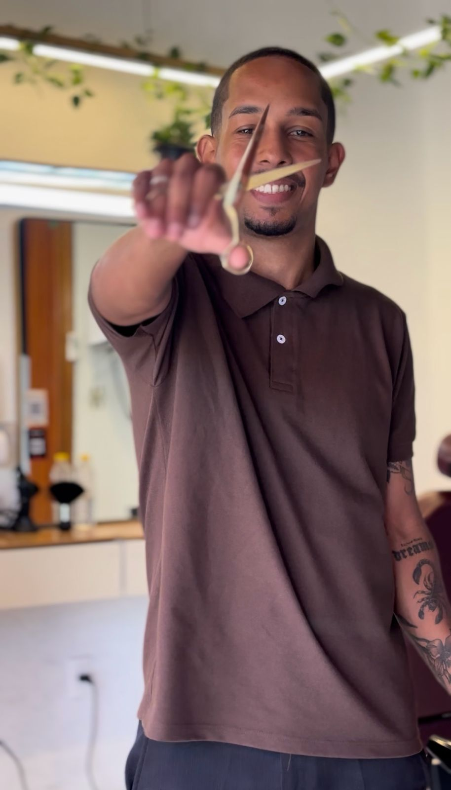
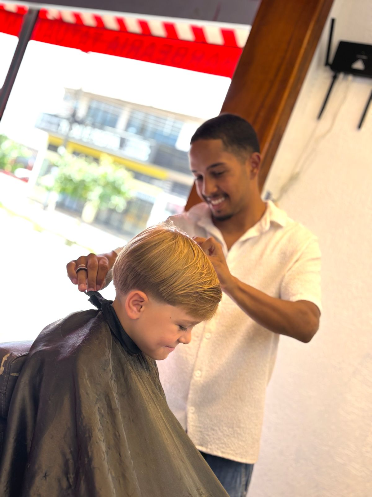

01
Jefferson Ferreira
Mais de 8 anos de navalha. Especialista em cortes clássicos e degradê milimétrico. A referência por trás de cada detalhe da casa.
Falar no WhatsAppCada barbeiro carrega história nas mãos. Aqui a técnica é levada a sério — e o estilo, também.
Técnica apurada, olho no detalhe e muita dedicação. Conheça quem está por trás de cada corte.
Mais de 8 anos de navalha. Especialista em cortes clássicos e degradê milimétrico. A referência por trás de cada detalhe da casa.
Falar no WhatsAppCada profissional se aperfeiçoa constantemente. O resultado é sempre mais do que um corte.
O cliente chega como cliente e sai como um amigo. Atendimento é compromisso, não protocolo.
Cada corte é único. A missão é realçar o estilo de quem está na cadeira.



Segunda a sábado das 09h às 20h e domingo das 09h às 13h. Av. Loreto, 1250 — Jardim das Flores, Araras/SP.